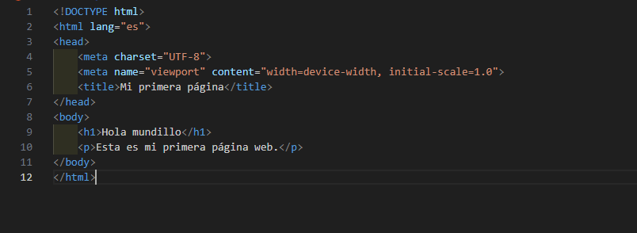
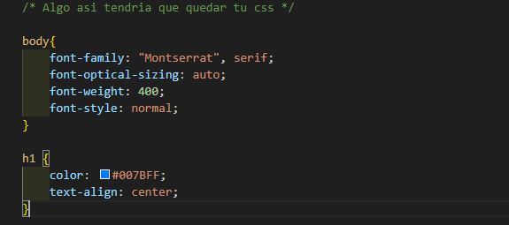

Puedes empezar a programar cuanto tu quieras, aqui veremos unas guias para los lenguajes mas conocidos de la programación
Si estás interesado en aprender a programar pero no sabes por dónde comenzar, ¡has llegado al lugar indicado!
Encontrarás una guía sencilla con los pasos esenciales y recursos recomendados para adentrarte en este fascinante mundo.
Esta sección está diseñada para principiantes, así que no te preocupes si no tienes experiencia previa.
Aquí exploraremos los conceptos básicos, los lenguajes más amigables para empezar y las herramientas que te facilitarán el aprendizaje.
¡Prepárate para descubrir cómo convertir tus ideas en código!
Tienes varias opciones para comenzar
Python es un lenguaje de programación popular por su simplicidad y versatilidad.
Es ideal para principiantes porque su sintaxis es clara y fácil de leer, lo que permite concentrarse más en la lógica que en los detalles técnicos.
Python se utiliza en una amplia variedad de campos, como desarrollo web, análisis de datos, inteligencia artificial y automatización.
Es una excelente opción para aprender las bases de la programación.
¿Como empezar en python?
Instala Python
Ve al sitio oficial de Python y descarga la última versión compatible con tu sistema operativo. Durante la instalación, asegúrate de marcar la opción "Add Python to PATH".
Elige un editor de código
Puedes usar un editor como VS Code, PyCharm (ideal para principiantes) o incluso el simple IDLE que viene con Python.
Aprende lo básico
Comienza con temas como
Sintaxis básica: variables, tipos de datos y operadores.
Control de flujo condicionales (if else elif ) y bucles (for, while).
Funciones y manejo de errores
Practica con proyectos simples
Escribe pequeños programas como una calculadora, un juego de adivinanzas o una lista de tareas. Esto te ayudará a aplicar lo aprendido.
HTML (HyperText Markup Language) y CSS (Cascading Style Sheets) son el dúo básico para crear y diseñar páginas web.
HTML: Es el lenguaje encargado de estructurar el contenido de una página web, como textos, imágenes, videos y enlaces. Es la columna vertebral de cualquier sitio.
CSS: Se utiliza para darle estilo y diseño a la página, como colores, fuentes y disposición de elementos. Con CSS, puedes hacer que una página HTML sea visualmente atractiva y fácil de navegar. Ambos son esenciales para cualquier persona interesada en el desarrollo web.
¿Como empezar en HTML y CSS?
Descarga un editor de codigo, enste caso como mencionamos anteriormente podria ser VS CODE, Sublime Text, o un bloc de notas, La verdad recomendamos VS Code
Busca extensiones a tu gusto para editar con mas comodidad
En el video-tutorial que dejaremos mas abajo conoceremos mas sobre esto
Crea tu primer archivo HTML
Abre tu editor de texto y escribe el siguiente codigo basico

Despues lo abres para ver el resultado, (Con la extension live server)
Crea tu primer archivo CSS
Para esto tienes que crear una carpeta al mismo nivel del html con el nombre de css (de preferencia), y dentro de esa carpeta poner un archivo que termine en .css por ejemplo (estilos.css)

Experimenta con los elementos HTML
Prueba usar las etiquetas basicas
Mucha practica constante
Crea paginas pequeñas como practica, como tu perfil o una lista de tareas o una galeria de imagenes
Video recomendado para HTML Y CSS
JAVA SCRIPT
JavaScript es un lenguaje de programación dinámico y versátil utilizado principalmente para crear interactividad en las páginas web.
Se ejecuta en el navegador del usuario, lo que permite actualizar el contenido de una página, responder a eventos (como clics y desplazamientos) y realizar otras tareas sin necesidad de recargar la página.
Es un lenguaje ligero, orientado a objetos y basado en eventos. Aunque inicialmente se usaba solo en el frontend (en el navegador), hoy en día también se utiliza en el backend mediante plataformas como Node.js.
¿Como empezar en JavaScript?
Configurar tu entorno de trabajo
Como hemos mencionado duratne toda la guia hay que instalar un editor de codigo en este caso recomendamos instalar VS Code, y usar un navegador moderno como Google Chrome o Firefox que incluyen herramientas de desarrollo (DevTools)
Aprende los fundamentos
Variables: Aprende a declarar variables con var, let y const
Tipos de datos: Números, cadenas, booleanos, arreglos, objetos